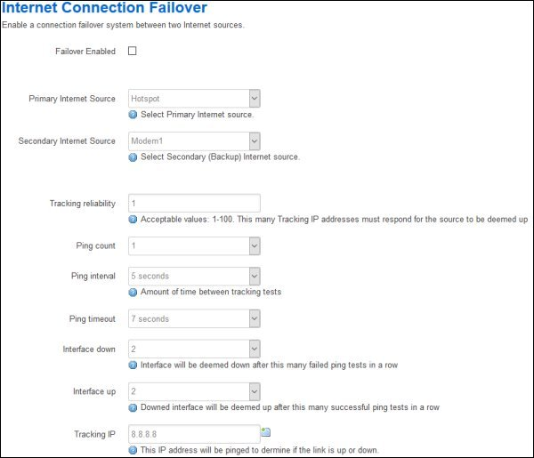
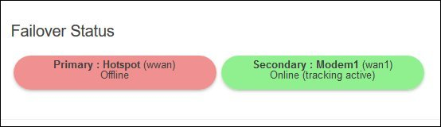

using multiple Internet sources
Connection Failover
If you have another source of Internet and want to use a modem as backup in case of connection loss then Connection Failover will work to switch between the other source and the modem without user intervention. This feature is only available on routers using 8meg of flash and only works if the other Internet source is something other than a modem. Routers using an 16meg image use Load Balancing to achieve failover.
Connection Failover is restricted to two different types of Internet source. The Primary source can be either the Wan (wired Internet) or a Wifi Hotspot connection. The Secondary source can be one of the two modems. Each Internet source is checked to see if it is working by pinging a specified server. If the Primary source fails the ping test then the Secondary source is activated to handle traffic from the Internet. When the Primary source is active again then a switch is made back to it and the Secondary source is deactivated.
To set up Failover go to the Modem menu and the Connection Failover submenu.

- Failover Enabled is used to enable this feature. By default it is disabled.
- Tracking IP is the IP Address of a site you wish to ping. An IP Address must be entered in this box in order for Connection Monitoring to work. By clicking on the green plus at the end of the box you can have multiple IP Addresses that you wish to ping. If multiple Tracking IPs are defined then these are pinged one after the other and the number of responses are kept track of for that ping session.
- Tracking Reliability is the number of Tracking IPs that must respond each time a ping session is done in order for the connection to be deemed up or down. It must be less than or equal to the number of Tracking IPs defined.
- Ping Count is the number of packets sent during a ping to a Tracking IP. A larger number of packets can ensure that a ping response occurs in congested areas.
- Ping Interval is the amount of time between each ping session. The longer this interval the less data that is used pinging the Tracking IPs but it is also slower to determine if a connection is up or down.
- Ping Timeout is the amount of time that the Connection Monitor waits after sending a ping for its response. If no response is obtained in this time then the ping is assumed to be lost. This time may be increased if congestion is slowing down your connection.
- Interface Down is the number of ping sessions that failed to return the number of pings defined by Tracking Reliability as required before the connection is deemed to be down.
- Interface Up is the number of ping sessions that returned a response of the number of pings defined by Tracking Reliability as required before the connection is deemed to be up.
The default values will work quite well in most situations but connections that suffer from congestion or other problems may have to be customized to avoid false indications of the connection being down.
The status of Failover is displayed at the bottom of the Status Overview page.
